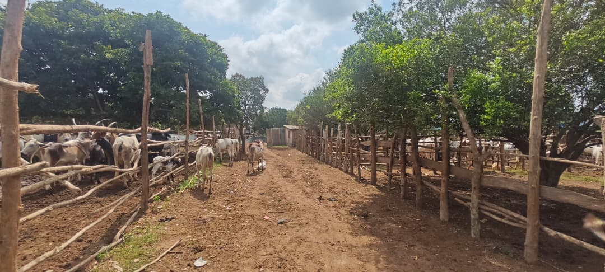
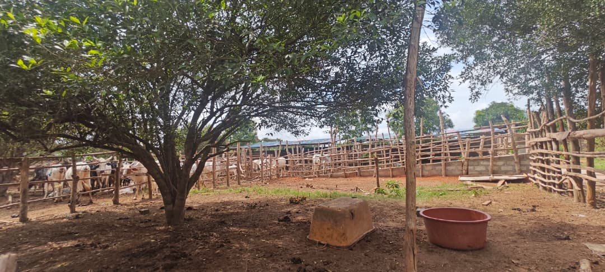

Ferme d'élevage bovin intégrée avec traçabilité RFID
Mise en place d'une unité de production bovine avec identification RFID de l'ensemble du cheptel, suivi zootechnique informatisé et gestion des performances.

Culture et stockage de fourrages pour la saison sèche
Développement de parcelles fourragères avec stockage en balles pour sécuriser l'alimentation du cheptel toute l'année.

Création de l'unité WAT CATTLE FOOD
Mise en place de l'usine de production de provendes et d'aliments composés pour bovins, ovins et volailles.

Fondation de la coopérative LELAL MAROBE NEÏ
Création et structuration de la coopérative regroupant les producteurs partenaires de LELAL AGROPASTORAL.
Programme de formation des éleveurs partenaires
Sessions régulières de formation pratique à la ferme pilote pour les membres de la coopérative LELAL MAROBE NEÏ.
Unité de collecte et transformation du lait
Mise en place d'une chaîne de collecte, transformation et commercialisation du lait produit sur les fermes partenaires.
Unité de compostage et biogaz
Valorisation des effluents d'élevage par compostage et production de biogaz pour alimenter les installations en énergie renouvelable.
Plateforme digitale de gestion des élevages partenaires
Développement d'un outil numérique pour centraliser les données zootechniques des membres de la coopérative.
Extension du parc d'élevage ovin et caprin
Développement des infrastructures d'élevage des petits ruminants pour répondre à la demande croissante du marché local.